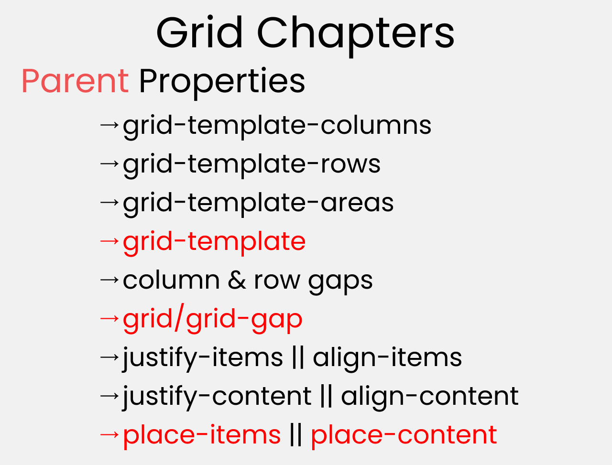
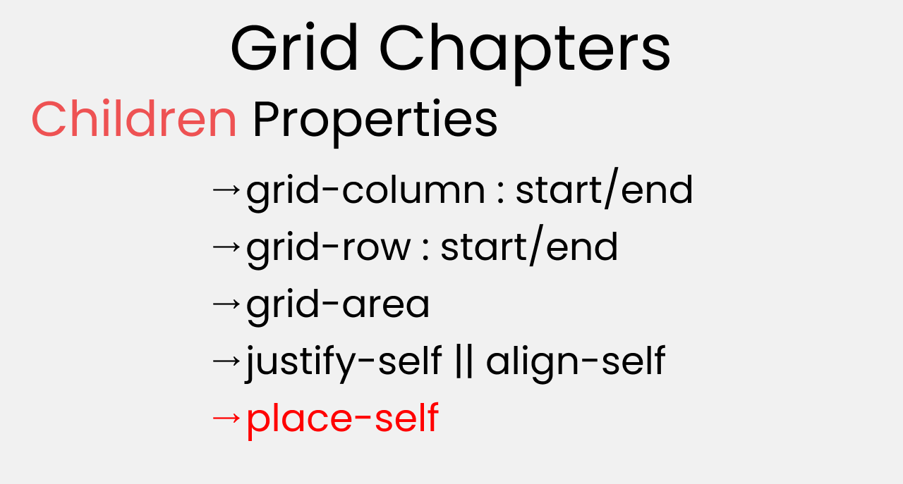
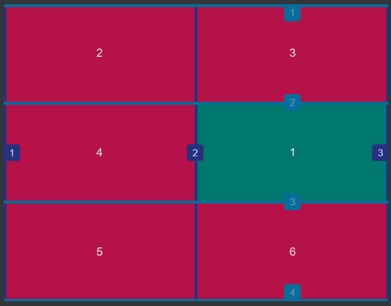
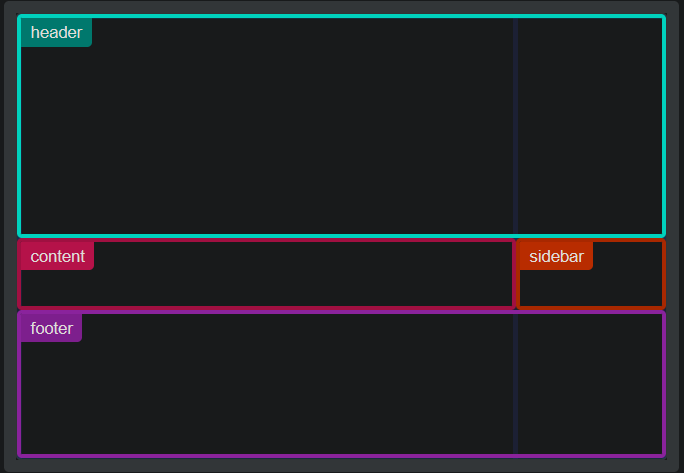

稍微学习 CSS Grid
https://www.freecodecamp.org/news/css-grid-tutorial-with-cheatsheet/
Flex 布局很好，能够很好地解决以前很蛋疼的一些布局问题，如圣杯布局，如垂直居中，如响应式的卡片列表等。但在有些地方仍旧乏力，比如我想控制每一行元素的数量，我必须得在子元素的 basis 上写百分比，而且这玩意儿也不算完全保险，比如改了 gap 的时候可能又会影响这个……这是因为 Flex 归根结底是一个单维度的布局，而这里试图做到二维布局。另一个例子是，我想用 CSS 绘制一个吉他指板，这要求每一行、每一列的元素的数量是固定的，这时候 flex 布局基本就没法做这个，得回到 table 等解决方案上，而 table 做这个则更为复杂，因为它设计上是用来展示数据的而不是用来布局的。
这时候 Grid 就可以出马了，它是一个二维的布局，允许同时处理行列，但它比 Flex 更为复杂，引入更多概念，需要专门学习。有了 Grid 后，Flex 仍旧有存在意义，但它们的用例将会是不同的。
Hello, World
首先是 Grid 容器，使用display: flex标识 Grid 容器，然后它需要grid-template-columns和grid-template-rows去设置它的行列数。子元素则需要使用grid-column和grid-row去明确自己所处的行和列（注意这个顺序也是可以随意设定的，因此像 flex 一样容易在 media query 中重新调整顺序。
下面是一个最简单的 grid 布局的例子，table 能够实现同样效果，而 grid 能做到的远不止如此。
1 | |
Grid 布局中有如下术语（下面“网格”指的均是 grid）：
- Grid 容器（container）：顾名思义
- Grid 元素（item）：顾名思义，Grid 容器的直接子元素
- Grid 线（line）：横向、竖向划分网格容器的线；横向的线称为行网格线，竖向称为列网格线，容器的边线也算
- Grid 轨道（track）：两个相邻的网格线包围的空间，可以认为它就是网格的行或列
- Grid 细胞（cell）：两个互相垂直的轨道相交的空间，它是单位（原子？）的
- Grid 区域（area）：四条网格线围成的区域，它总是矩形，且能够包含一个或多个 cell
Grid 线常用来定位，Grid 支持为每个 Grid 线定出名字，同一个 Grid 线可以有多个名字。


grid-template-rows, grid-template-columns
上面说到grid-template-rows和grid-template-columns能够指定行列数，更具体地说，它们创建行、列轨道。
下面grid-template-rows: 30px 40px;创建两个行轨道并指定它们的行高（显然这里默认有一个列轨道），而剩下的元素所在的行轨道没有被配置，他们就只能自己根据内容确定自己的行高。
1 | |
注意到，grid 容器（以及这些行轨道）默认占据整个宽度。
使用grid-template-columns: 10px 0.5fr 2fr则创建 3 个列轨道，这里的 fr 是 fraction，它的行为和 flex 的 grow、shrink 的值一样——按比例分配剩余空间到这些列，第二列分 0.5 份，第三列分 2 份。
1 | |
注意到元素 7 另起一行，它的行轨道未配置所以高度被限制为内容高度，而宽度被列轨道所限制。
考虑一个更复杂的例子grid-template-columns: 3rem 25% 1fr 2fr，此时，1fr = ((width of grid) - (3rem) - (25% width of grid)) / (1 + 2)。能够注意到这里的灵活性，然而还能更夸张。
关于 track 大小的配置还有更多运算符可用。比如minmax()，其允许接受一个最小值和一个最大值（其中可以有 auto，表示根据内容自动计算），去表示该轨道的最小值、最大值。如，minmax(100px, auto)表示最小值是 100px，然后可以按内容大小去增加；如minmax(auto, 50%)表示最小值是内容大小，但限制它无论如何不会超过 Grid 容器的 50%。
关于这里的“内容大小”，容易知道它是可变的——同一段话它可以放很长只放一行，也可以多行但很窄，所以光一个 auto 是不太算数的。实际上，这里可以是 auto，也可以是min-content，max-content等。
然后是repeat()，它是一个简写，表示重复多少次，如repeat(2, 100px)等价于100px 100px。
最后，grid-template是grid-template-rows和grid-template-columns的简写，语法是 grid-template: <'grid-template-rows'> / <'grid-template-columns'>。
gap
gap是row-gap，column-gap的简写，表示行 gap，列 gap，这个和 flex 一致，不表。
item 定位
Grid 元素能够指定元素放置的位置。对于只占一个 Cell 的元素，指定grid-row-start和grid-column-start即可，如果占多个 Cell，需要同时指定grid-row-end和grid-column-end，这里取的是 grid 线的行号，以 1 开始。
下面的四种写法均选择第二行第二列：
1 | |

注意到，一个元素可以占一个 area 而非 cell，这让 cell 能够进行复杂的布局。
同时，行列号索引可以是负数，-1 表示最后一个线，-2 表示倒数第二个，以此类推。
在定位中，可以使用关键字span表示偏移，如grid-row: 2 / span 3表示2 / 5，即这个元素从第 2 行开始，总共占 3 行，start 位置也可以使用 span，这时候从 end 开始计算偏移。
最后，start 和 end 反转也是可以的，grid-row: 5 / 2等价于2 / 5。
Grid Line、Area 的命名
行列线可以命名，命名方式很显然——grid-template-rows: [row-1-start] 1fr [row-2-start row-1-end] 1fr [row-2-end]，为第一个行线命名为row-1-start，为第二个行线命名为row-2-start和row-1-end，为第三个行线命名为row-2-end，命名可以包含空格，这也是为什么下面定位语法需要包含分割符/。
区域也可以命名，命名方式是使用grid-template-areas，对一个 3 行 2 列的 grid，它的语法类似 grid-template-areas: "header header" "content sidebar" "footer footer"，注意到每一行是一个字符串，字符串中使用空格分割每一列。

引用区域和引用线是一样的，CSS 自己知道要应用起始的线还是终止的线，比如，下面三种写法都占满 header：
1 | |
实际上，对行列线进行命名时，如果以XXX-start，XXX-end命名，会自动创建命名区域XXX；同时，创建命名区域XXX时，会自动为行列线命名XXX-start，XXX-end。这证明，命名区域本质上就是命名行列线。
关于隐式 grid（实际元素数量比规定的多，因此自动创建新的行列轨道去塞这些元素），这里先不学习。
对齐
在 Flex 中，主轴和交叉轴是特定于 flex 方向的，而 Grid 中是绝对的——主轴是 X 轴，即行，交叉轴是 Y 轴，即列。
回忆一下 Flex 中的三种对齐配置（假定方向是 row）：
- align-items，每个元素在其垂直方向上的对齐
- justify-content，每个元素在这行上的分布
- align-content，不同行在垂直方向上的对齐
容易注意到，align 表示的是交叉轴上的对齐，justify 表示的是主轴上的对齐；item 会改变元素“自身”的对齐。这个对齐不会影响这一行的高度，只是在这个“盒子”里安排元素的位置（这时候，可以认为 Flex 容器是给了所有 Flex 元素一个对齐的默认值，而元素自己能够设置自己的对齐），而 content 会改变元素外部的对齐。
下图可以看出 align-items 的实质——不改变围绕它的盒子，只改变元素自己。

值得欣慰的是，Grid 中是相同的，同样有这三种对齐配置，但另外包括justify-items（flex 布局中没有这个，因为 flex 的元素没法调整自己在主轴上的分布，这个只能被容器处理）：
align-items，元素在 cell 内部的垂直方向上的对齐justify-items，元素在 cell 内部的水平方向上的对齐align-content，所有 cell（行）在垂直方向上的对齐justify-content，所有 cell（列）在水平方向上的对齐
此外，每个 flex 元素能够配置align-self和justify-self，顾名思义，配置自己在 Cell 内部的垂直方向、水平方向上的对齐。
最后，CSS 提供了对齐的简写：
place-content: <'align-content'> / <'justify-content'>place-items: <'align-items'> / <'justify-items'>place-self: <'align-self'> / <'justify-self'>
更细节的可能可以参考这里 https://css-tricks.com/snippets/css/complete-guide-grid/。
就这样了，let’s have some fun https://cssgridgarden.com/.
何时使用 grid，何时使用 flex
https://www.youtube.com/watch?v=41ZBkZUVApc
呃原则是……二维布局，如整个页面，适合使用 grid，一维布局，如 header 上的按钮等，适合使用 flex；注意登陆表单、以及带按钮、文字的菜单，看上去是二维布局，但实际操作的时候还是一维布局，这时候使用 flex 是适合的
本博客所有文章除特别声明外，均采用 CC BY-NC-SA 4.0 协议 ，转载请注明出处！